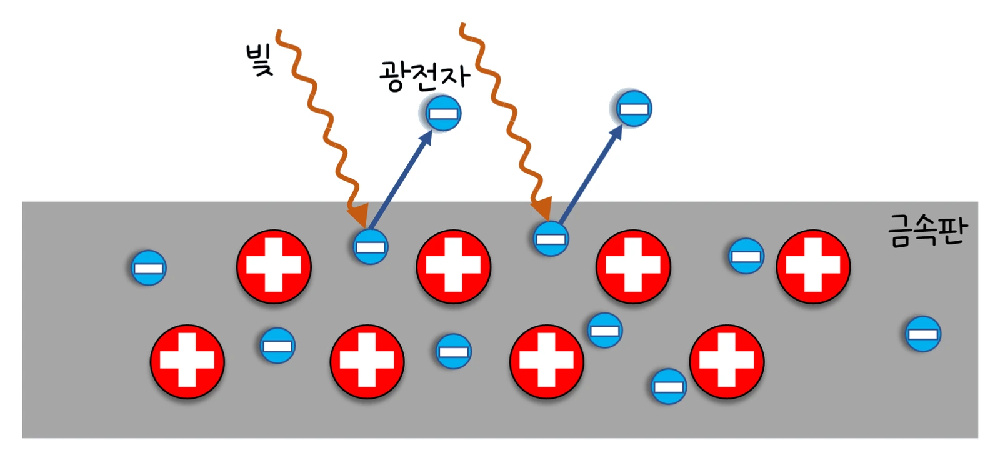

대학 일반물리 실험 2 · 15주차 · 양자 물리의 시작
실험에서 세슘·나트륨·아연·구리판에 파장 λ(200~650 nm)인 빛을 비추고, 튀어나온 전자를 멈추는 저지 전압 V_s를 기록했습니다. 나트륨은 250, 300, 400, 500 nm에서 V_s = 2.65, 1.85, 0.82, 0.17 V였고 550 nm에서는 전자가 나오지 않았으며, 아연은 300 nm에서도 나오지 않았습니다. V_s–f 그래프의 기울기는 금속과 무관하게 h/e ≈ 4.14×10⁻¹⁵ V·s였고 절편에서 일함수를 얻었습니다. 광자와 광전 효과, 2학기 전자기학의 흐름을 정리합니다.
실험 데이터 되짚기
실험 안내: 금속판(세슘·나트륨·아연·구리)을 고르고 빛의 파장 λ 슬라이더(200~650 nm)를 맞춘 뒤 「빛 비추고 V_s 재기」를 누르면 진동수 f와 저지 전압 V_s, 방출 여부가 기록표에 자동으로 쌓입니다. 한 금속에서 전자가 나오는 파장을 4개 이상 고르면 「데이터 검증」 탭에서 금속별 V_s–f 직선과 기울기로 구한 h, 절편으로 구한 W 표가 열립니다.
| 금속 (W) | λ (nm) | f (10¹⁴ Hz) | 광자 에너지 (eV) | V_s 측정 (V) | 방출 |
|---|---|---|---|---|---|
| Na (2.3 eV) | 250 | 11.992 | 4.959 | 2.65 | 예 |
| Na | 300 | 9.993 | 4.133 | 1.85 | 예 |
| Na | 400 | 7.495 | 3.100 | 0.82 | 예 |
| Na | 500 | 5.996 | 2.480 | 0.17 | 예 |
| Na | 550 | 5.451 | 2.254 | 0 | 아니오 (문턱 539 nm) |
| Zn (4.3 eV) | 300 | 9.993 | 4.133 | 0 | 아니오 (문턱 288 nm) |
V_s는 진동수에 대해 직선으로 늘고 기울기 h/e는 금속과 무관하며, 절편(−W/e)만 금속마다 다릅니다. 광자 한 개(hf)가 전자 한 개에 에너지를 주고, 그중 일함수 W만큼은 금속을 빠져나오는 데 쓰이기 때문입니다. 광자 에너지가 W보다 작으면(나트륨 550 nm, 아연 300 nm) 빛을 아무리 세게 해도 전자가 나오지 않습니다 — 파동 이론으로는 설명할 수 없는 결과입니다.
아인슈타인(1905): Kmax = hf − W = eVs → Vs = (h/e)f − W/e
교재 그림
빛을 받은 금속판에서 튀어나오는 광전자

빛알(광자) 하나가 전자 하나에게 에너지 hf를 줍니다. 이 에너지가 일함수 W보다 커야 전자가 금속판을 벗어나 광전자가 돼요.
움직여 보기
빛알 하나가 전자 하나를 — 색(진동수)이 문턱을 넘어야 튀어나온다
빛을 세게 하면 튀어나오는 전자 수만 늘고 V_s(전자의 최대 운동 에너지)는 그대로입니다. 문턱 파장보다 긴 빛은 아무리 세게 비춰도 전자가 나오지 않아요. 오른쪽 그래프의 네 직선은 기울기(h/e)가 모두 같고 절편만 다릅니다. (일함수 단위 eV, 전자 속력은 화면에서 줄여 그림)
드브로이 파장 λ = h/p(전자는 λ ≈ 1.23/√K[eV] nm), 불확정성 Δx·Δp ≥ ħ/2, 수소 원자 에너지 준위 En = −13.6 eV/n². 핵은 원자보다 약 10⁵배 작습니다(3주차의 rmin).
| 전기 | 자기 |
|---|---|
| 쿨롱 법칙 · 가우스 법칙 (1–2주) | 비오-사바르 · 앙페르 법칙 (7주) |
| 전위 · 축전기 ½CV² (3–4주) | 인덕턴스 ½LI² (9주) |
| RC 시간 상수 RC (5주) | RL 시간 상수 L/R (9주) |
| 변하는 B → E (패러데이, 8주) | 변하는 E → B (변위 전류, 10주) |
1학기 개념의 재등장: 원운동 구심력(6주 질량 분석기), 에너지 보존(3주·8주), 용수철 진동(9주 LC), 파동(11–13주). 시험 단골 함정: 부호(허상 si < 0, 렌츠 방향), 실효값 vs 최댓값, 단위(eV와 J, cm와 m).
· 밀리컨(1916)은 광전 효과로 h를 약 0.5% 안으로 측정했습니다. 실제 측정에서는 접촉 전위차 때문에 절편이 조금 이동해요.
· 빛의 세기는 전자 "수"(광전류)만 바꾸고 Vs는 바꾸지 않습니다.
h = 6.626×10⁻³⁴ J·s, h/e = 4.136×10⁻¹⁵ V·s · hc = 1239.84 eV·nm · 일함수(대략): Cs 2.1, Na 2.3, Zn 4.3, Cu 4.7 eV · 문턱 파장 Na 539 nm, Zn 288 nm
E = 1239.84 ÷ 400 = 3.10 eV. K_max = 3.10 − 2.3 = 0.80 eV. V_s = 0.80 V. 튀어나온 전자의 드브로이 파장은 1.226 ÷ √0.80 ≈ 1.37 nm입니다.
기울기 = (1.833 − 0.180) ÷ (9.993 − 5.996)×10¹⁴ = 4.136×10⁻¹⁵ V·s. h = e × 기울기 = 1.602×10⁻¹⁹ × 4.136×10⁻¹⁵ = 6.63×10⁻³⁴ J·s.